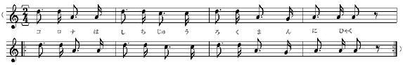

| イーハトーボ農学校の春 | |
| 宮沢 賢治 | |
| (2012) | |
イーハトーボ農学校の春
宮沢賢治
太陽
マジックのうたはもう青ぞらいっぱい、ひっきりなしにごうごうごうごう鳴っています。

わたしたちは黄いろの実習服
を着
て、くずれかかった煉瓦
の肥溜
のとこへあつまりました。
冬中いつも唇
が青ざめて、がたがたふるえていた阿部時夫
などが、今日はまるでいきいきした顔いろになってにかにかにかにか笑
っています。ほんとうに阿部時夫なら、冬の間からだが悪
かったのではなくて、シャツを一枚
しかもっていなかったのです。それにせいが高いので、教室でもいちばん火に遠いこわれた戸のすきまから風のひゅうひゅう入って来る北東の隅
だったのです。
けれども今日は、こんなにそらがまっ青
で、見ているとまるでわくわくするよう、かれくさも桑
ばやしの黄いろの脚
もまばゆいくらいです。おまけに堆肥小屋
の裏
の二きれの雲は立派
に光っていますし、それにちかくの空ではひばりがまるで砂糖水
のようにふるえて、すきとおった空気いっぱいやっているのです。もう誰
だって胸中
からもくもく湧
いてくるうれしさに笑い出さないでいられるでしょうか。そうでなければ無理
に口を横
に大きくしたり、わざと額
をしかめたりしてそれをごまかしているのです。
（コロナは六十三万二百
※［＃ト音記号、48-12］
‥‥‥
※［＃ト音記号、48-13］
‥‥‥
ああきれいだ、まるでまっ赤
な花火のようだよ。）
それはリシウムの紅焰
でしょう。ほんとうに光炎菩薩
太陽
マジックの歌はそらにも地面
にもちからいっぱい、日光の小さな小さな菫
や橙
や赤の波
といっしょに一生
けん命
に鳴っています。カイロ男爵
だって早く上等
の絹
のフロックを着
て明るいとこへ飛
びだすがいいでしょう。
楊
の木の中でも樺
の木でも、またかれくさの地下茎
でも、月光いろの甘
い樹液
がちらちらゆれだし、早い萱草
やつめくさの芽
にはもう黄金
いろのちいさな澱粉
の粒
がつうつう浮
いたり沈
んだりしています。
（※［＃ト音記号、49-8］
‥‥‥
コロナは三十七万十九
※［＃ト音記号、49-10］
‥‥‥
※［＃ト音記号、49-11］
‥‥‥ ）
くずれかかった煉瓦
の肥溜
の中にはビールのように泡
がもりあがっています。さあ順番
に桶
に汲
み込
もう。そこらいっぱいこんなにひどく明るくて、ラジウムよりももっとはげしく、そしてやさしい光の波
が一生けん命一生けん命ふるえているのに、いったいどんなものがきたなくてどんなものがわるいのでしょうか。もうどんどん泡
があふれ出してもいいのです。青ぞらいっぱい鳴っているあのりんとした太陽
マジックの歌をお聴
きなさい。
（コロナは六十七万四千
※［＃ト音記号、50-6］
‥‥‥
※［＃ト音記号、50-7］
‥‥‥ ）
さあ、ではみんなでこいつを下台
の麦ばたけまで持
って行こう、こっちの崖
はあんまり急
ですからやっぱり女学校の裏
をまわって楊
の木のあるとこの坂
をおりて行きましょう。大丈夫
二十分かかりません。なるべくせいの似
たような人と、二人
で一つずつかついで下さい。そうです、町の裏を通って行くのです。阿部君
はいっしょに行くひとがない、それはぼくといっしょに行こう。ああ鳴っている、鳴っている、そこらいちめん鳴っている太陽マジックの歌をごらんなさい。
（※［＃ト音記号、51-1］
‥‥‥
※［＃ト音記号、51-2］
‥‥‥
コロナは八十三万五百
※［＃ト音記号、51-4］
‥‥‥
※［＃ト音記号、51-5］
‥‥‥ ）
まぶしい山の雪の反射
です。わたくしがはたらきながら、また重
いものをはこびながら、手で水をすくうことも考えることのできないときは、そこから白びかりが氷
のようにわたくしの咽喉
に寄
せてきて、こくっとわたくしの咽喉
を鳴らし、すっかりなおしてしまうのです。それにいまならぼくたちの膝
はまるで上等
のばねのようです。去年
の秋のようにあんなつめたい風のなかなら仕事
もずいぶんひどかったのですけれども、いまならあんまり楽でただ少し肩
の重苦
しいのをこらえるだけです。それだって却
って胸
があつくなっていい気持
なくらいです。
（コロナは六十三万十五
※［＃ト音記号、52-2］
‥‥‥
※［＃ト音記号、52-3］
‥‥‥ ）
おおこまどり、鳴いて行く鳴いて行く、音譜
のように飛
んで行きます。赤い上着
でどこまで今日はかけて行くの。いいねえ、ほんとうに、
かえれ、こまどり、アカシヤづくり。
赤の上着
に野やまを越
えて
（※［＃ト音記号、52-8］
‥‥‥
※［＃ト音記号、52-9］
‥‥‥
コロナは三十七万二千
※［＃ト音記号、52-11］
‥‥‥ ）
そこの角から赤髪
の子供
がひとり、こっちをのぞいてわらっています。おい、大将
、証書
はちゃんとしまったかい。筆記帳
には組と名前を楷書
で書いてしまったの。
さあ、春だ、うたったり走ったり、とびあがったりするがいい。風野又三郎
だって、もうガラスのマントをひらひらさせ大よろこびで髪
をぱちゃぱちゃやりながら野はらを飛
んであるきながら春が来た、春が来たをうたっているよ。ほんとうにもう、走ったりうたったり、飛びあがったりするがいい。ぼくたちはいまいそがしいんだよ。
（コロナは八万三千十九
※［＃ト音記号、53-8］
‥‥‥
※［＃ト音記号、53-9］
‥‥‥ ）
砂土
がやわらかい匂
の息
をはいています。いままでやすんでいた虫どもが、ぼんやりといま眼
をさまし、しずかに息をするらしいのです。麦はつやつや光っています。雪の下からうまくとけて出て青い麦です。早く走って行こう、かけさえしたらすぐに麦は吸
い込
むのだ。
（コロナは八万三千十九）
わたくしたちが柄杓
で肥
を麦にかければ、水はどうしてそんなにまだ力も入れないうちに水銀
のように青く光り、たまになって麦の上に飛びだすのでしょう、また砂土がどうしてあんなにのどの乾
いた子どもの水を呑
むように肥を吸い込むのでしょう。もうほんとうにそうでなければならないから、それがただひとつのみちだからひとりでどんどんそうなるのです。
（コロナは十万八千二百
※［＃ト音記号、54-7］
‥‥‥
※［＃ト音記号、54-8］
‥‥‥ ）
こんどは帰りはわたくしたちは近みちをしてあの急
な坂
をのぼりましょう。あすこの坂なら杉
の木が昆布
かびろうどのようです。阿部君
、だまってそらを見ながらあるいていて一体何を見ているの。そうそう、青ぞらのあんな高いとこ、巻雲
さえ浮
びそうに見えるとこを、三羽の鷹
かなにかの鳥が、それとも鶴
かスワンでしょうか、三またの槍
の穂
のようにはねをのばして白く光ってとんで行きます。
（コロナは三十七万二百
※［＃ト音記号、55-1］
‥‥‥
※［＃ト音記号、55-2］
‥‥‥ ）
おや、このせきの去年のちいさな丸太の橋
は、雪代水
で流
れたな、からだだけならすぐ跳
べるんだが肥桶
をどうしような。阿部君、まず跳び越
えてください。うまい、少しぐちゃっと苔
にはいったけれども、まあいいねえ、それではぼくはいまこっちで桶をつるすから、そっちでとってくれ給
え。そら、重
い、ぼくは起重機
の一種
だよ。重い、ほう、天びん棒
がひとりでに、磁石
のように君
の手へ吸
い着
いて行った。太陽
マジックなんだほんとうに。うまい。
（※［＃ト音記号、55-9］
‥‥‥
※［＃ト音記号、55-10］
‥‥‥ ）
楊
の木でも樺
の木でも、燐光
の樹液
がいっぱい脈
をうっています。
底本：「イーハトーボ農学校の春」角川文庫、角川書店
１９９６（平成8
）年3
月25
日初版発行
底本の親本：「新校本 宮澤賢治全集」筑摩書房
１９９５（平成7
）年5
月
入力：ゆうき
校正：noriko saito
２００９年8
月22
日作成
青空文庫作成ファイル：
このファイルは、インターネットの図書館、青空文庫（http://www.aozora.gr.jp/）で作られました。入力、校正、制作にあたったのは、ボランティアの皆さんです。